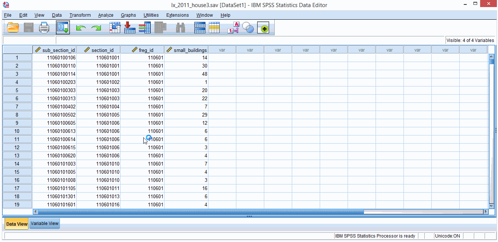

You can use mixed models to analyse more complex nested structures. For example, students, within classrooms, within schools, so on and so forth. I’ll just briefly show you how to create a 3 level, random intercept null model and then proceed to highlight a few basic details.
Let’s have a completely new and different dataset called lx_2011_house3.sav. You can download it here. This dataset set has the number of 1 and 2 stories buildings in 500 sub-sections, inserted in 379 sections and 52 Lisbon parishes (this is a selection of 2011 Lisbon census data). Follow the instructions of figure 6.1 if you may.

Figure 6.1. Building a 3 level random intercept null model.
The first thing you’ll see in the output is the number of parameters. We have the fixed intercept effect, random intercept variances for level 2 and level 3, and the residual variance (4 parameters total). So now we have, a level 1 variance (σresidual), a level 2 variance (σbetween_section), and a level 3 variance (σbetween_parish). That is, we have unexplained variance (in the number of 1 and 2 stories building) at three different levels. This means we can compute 3 different ICCs.
From the variance estimates provided in the last table: σresidual = 56.41, σbetween_section = 90.87 (level 2), and σbetween_parish = 19.04 (level 3). This makes the total variance = 166.32. As such, 33.9% (56.41 / 166.32) is level 1 variance, 54.6% (90.87 / 166.32) is level 2 variance, and 11.4% is level 3 variance.
Now if we had, we could add predictors and look at effects’ estimates and deviance statistics of the different models as we did for 2 level models. But just a quick note related to the ecological fallacy stuff. If you have a 3 level model like this (subsection, section, parish), you can disaggregate a predictor effect in a (a) within section effect, (b) between section – within parish effect, and (c) a between parish effect (neat!). Then you can have varying, interactions between variables measured at different levels, and whatelse… It can get really messy. I have very little experience with 3 level models so I won’t go further than this.